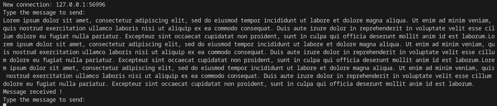
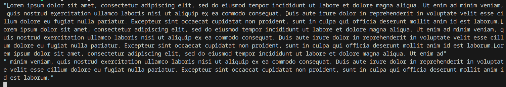

The SSL/TLS protocol suite is particularly known for being used within web browsers during HTTPS exchanges. They operate in client-server mode and add a layer of security during exchanges by authenticating the server and ensuring data confidentiality. We will base this on the openssl crate and create two programs, a server, and a client. In our case, we use the crate's automatic detection to use openssl; you can refer to the "Automatic" section of the documentation for necessary installations. After creating a new project, you can add the crates we will use via: cargo add anyhow and cargo add openssl.
We will start by implementing the server; the crates to import into our main.rs file are as follows:
use anyhow::Result;
use openssl::ssl::{SslAcceptor, SslFiletype, SslMethod, SslStream};
use std::io;
use std::net::{TcpListener, TcpStream};
use std::sync::Arc;
use std::thread;
We use the SslAcceptor structure to create the "wrapper" that will contain the server-side data streams and use the default builder, which is mozilla_intermediate. This builder takes as a parameter the ssl method we want to use: tls_server(). Within this "builder," we will also specify the private key and certificate used to encrypt the streams. These two elements can be generated via the following command:
openssl req -x509 -newkey rsa:4096 -keyout server.key -out server.pem -sha256 -days 365**
In the command, x509 is one of the standard formats for certificates, 4096 is the key size, server.key and server.pem are our output files, and 365 corresponds to the validity period of our certificate.
Subsequently, this "builder" will be converted into Arc<SslAcceptor>, which will allow creating references with the same "ownership" over the object. Finally, we will define a "listener" responsible for listening for incoming connections. The corresponding code so far is as follows:
fn main() -> Result<()> {
// create acceptor: a type which wraps server-side streams in a TLS session
// mozilla_intermediate is the builder configured to connect to non legacy clients
let mut acceptor = SslAcceptor::mozilla_intermediate(SslMethod::tls_server())?;
// we add the private key and the certificate to use for the server into the builder
acceptor.set_private_key_file("server.key", SslFiletype::PEM)?;
acceptor.set_certificate_chain_file("server.pem")?;
acceptor.check_private_key()?;
// will consume the SslAcceptorBuilder and return a SslAcceptor - Arc will provide a shared ownership regarding a thread
let acceptor = Arc::new(acceptor.build());
// create the listener: the socket server that will receive the connection
let listener = TcpListener::bind("0.0.0.0:8080")?;
println!("[+] Server listening");
With the "listener" ready to accept connections, we now need to manage them. A loop will be used to retrieve each incoming connection and create a new "thread" used by the handle_client() function. If an error occurs, it will be caught by the "match" and returned. The Ok(()) at the end is used via anyhow to indicate that the execution went smoothly.
for stream in listener.incoming() {
match stream {
Ok(stream) => {
println!("New connection: {}", stream.peer_addr()?);
let acceptor = acceptor.clone();
thread::spawn(move || {
let stream = acceptor.accept(stream)?;
handle_client(stream)
});
}
Err(e) => {
println!("Error: {}", e);
}
}
}
Ok(())
}
The remaining block to implement is the client handling function. This function will take a TCP data stream as a parameter and loop between a user request, writing this data into a "buffer", sending it, and receiving an acknowledgment message from the client. The input data will be formed of 1024-byte blocks. We use from_utf8_lossy because this function allows us to use our byte array directly, unlike the from_utf8 function which requires a vector.
// take an SslStream in argument to handle data received
fn handle_client(mut stream: SslStream<TcpStream>) -> Result<()> {
loop {
println!("Type the message to send: ");
let mut input = String::new();
io::stdin().read_line(&mut input)?; // read the user input and insert it into the input variable
stream.ssl_write(input.as_bytes())?; // same as write but returning a SslError in case of error - write the input into the stream
let mut data = [0u8; 1024]; // buffer containing the data that will be received
stream.ssl_read(&mut data)?; // like ssl_write but for read - read data send by the client
let string = String::from_utf8_lossy(&data); // converting a slice of bytes to a string
println!("{}", string);
}
}
The crates we need to import into our main are as follows:
use anyhow::Result;
use openssl::ssl::{SslConnector, SslMethod};
use std::net::TcpStream;
In our client program, we will use an SslConnectorBuilder instead of an SslAcceptorBuilder. This structure also takes an Ssl method parameter that we set to tls_client(). We then set the SSL verification mode to NONE to prevent our server program from requesting a client certificate and for the client not to worry about the server certificate's validity. Using the previous builder, we create an SslConnector and a TcpStream on our local IP address and the same port as the server 8080. A loop is then defined to wait for a message from the server using a buffer of the same size as the server: 1024 bytes. Just like with the server, the ssl_read and ssl_write functions will be used for data reception and sending. A delimiter of the received data is necessary using the symbol \n so that our buffer only displays the sent message and not the zeros that compose it if the message is less than 1024 bytes. After reception, we send a value back to the server to indicate that the data was received correctly. The complete code is as follows:
fn main() -> Result<()> {
let mut builder = SslConnector::builder(SslMethod::tls_client())?;
builder.set_verify(openssl::ssl::SslVerifyMode::NONE);
let connector = builder.build();
let address = "127.0.0.1:8080";
let stream = TcpStream::connect(address)?;
let mut stream = connector.connect(address, stream)?;
loop {
let mut recv = [0u8; 1024];
stream.ssl_read(&mut recv)?;
let recv_string = String::from_utf8_lossy(&recv);
let mut split = recv_string.split('\n'); // split the string with our line return in server message
println!("{:?}", split.next().unwrap());
stream.ssl_write(b"Message received!")?;
}
}
To conclude, here are the terminal snapshots of the client and server after execution.


This chapter on cryptography is now complete. We are certain that the implementation of the various encryption algorithms presented will serve as a foundation for the ransomware development exercise.